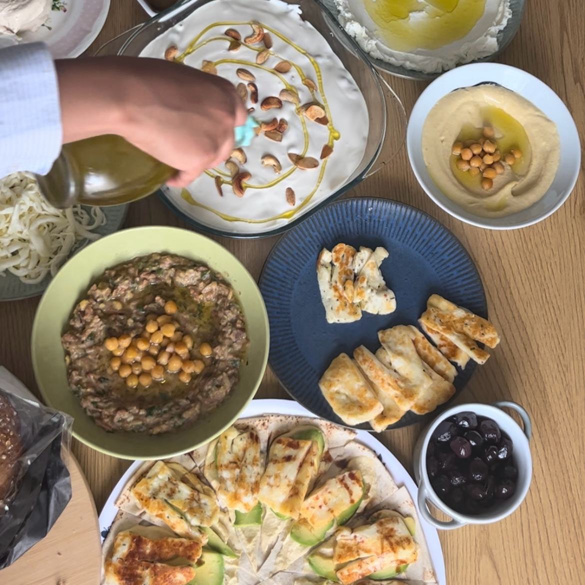
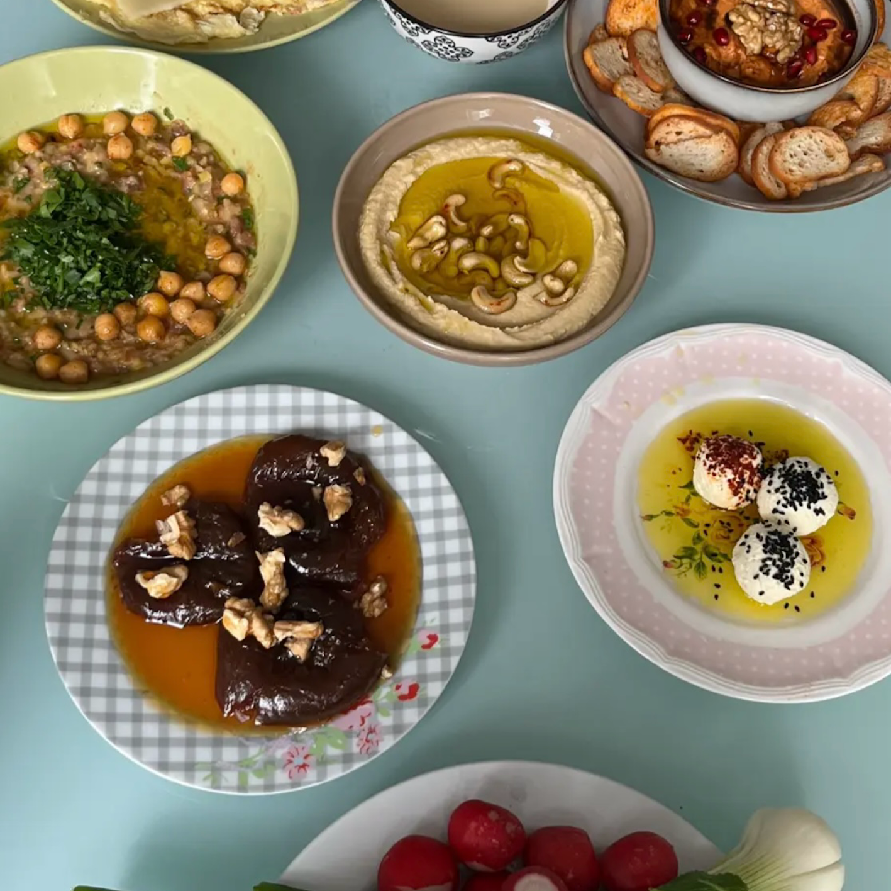

Opskrifter

Fattoush
- ½ romainesalat-hoved, groft hakket.
- ½ kilo cherrytomater, halveret.
- 2 persiske agurk, skåret i tern.
- ½ rød løg, skåret i skiver.
- 1 peberfrugt, udkernet og skåret i tern.
- ½ kop bredbladet persille, grofthakket og løst pakket.
- ⅓ kop radiser, tyndt skåret.
- ¼ kop frisk mynte, grofthakket og løst pakket.

Hummus
- 1 dåse kikærter
- ¼ kop tahini (sesamolie)
- ¼ kop vand
- Saften fra en stor, friskpresset citron
- 1 fed hvidløg
- Salt efter smag
- Persille til pynt (valgfrit)

Mansaf
- 4 lammeskanker
- 1 stor gul løg, skrællet men efterladt hel
- 10 hel allehånde
- 5 kardemommekapsler
- 4 nelliker
- 3 laurbærblade
- 1 kanelstang
- 1 teskefuld kosher-salt

Maqlubeh
- 750g jasminris
- 2 mellemstore auberginer, skåret i tykke skiver
- 1 mellemstort blomkålshoved, skåret i buketter
- Vegetabilsk olie til stegning
- 2 spsk ekstra jomfruolivenolie
- 1 tsk gurkemeje
- 1 tsk stødt allehånde
- 1/2 tsk stødt kanel
- 1/2 tsk friskkværnet sort peber
- 4 1/2 tsk kosher-salt
- 1 spsk (15 g) ghee eller klaret smør